Date: 2026-05-11 · Branch: aa/pl-homepage-phase-8.3-logo-grid · Audit cycle: 8.3 (logo bar parity only)
| Viewport | Live pattern | Preview pattern | Brief says | Live=Preview? | Verdict |
|---|---|---|---|---|---|
| 1280 | 1 row of 6 | 1 row of 6 | 1 row of 6 | YES | MATCH |
| 768 | 4 + 2 | 4 + 2 | 2 rows of 3 (3+3) | YES | MATCH (preview canonical; brief stale) |
| 375 | 2 + 2 + 2 | 2 + 2 + 2 | 3 rows of 2 | YES | MATCH |
Per operator rule "preview is canonical": live matches preview at 768 → PASS for 8.3. The brief's "two rows of three at md" is stale; flag separately for a doc-only brief update cycle.
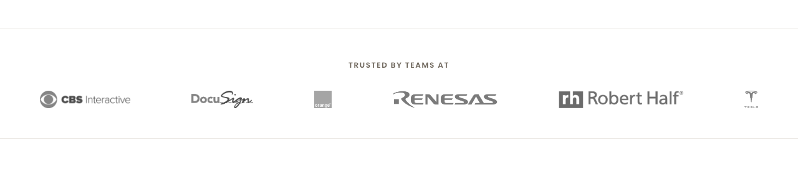
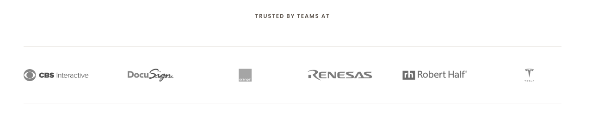
Crops aligned so each site's logo container starts at the same y. AE pixel count: 11,705 of 138,240 (8.47%). Inspect the red areas: the deltas are exclusively horizontal-position shifts of identical logo content. No per-logo treatment delta.
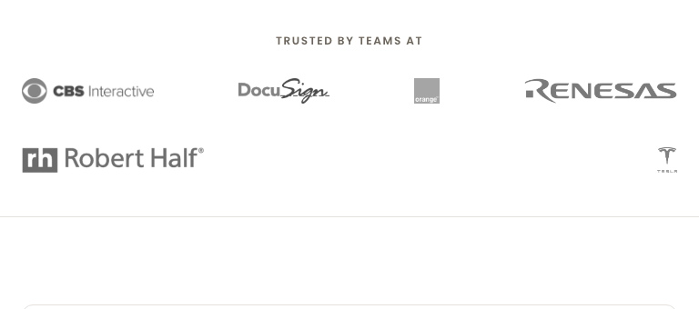
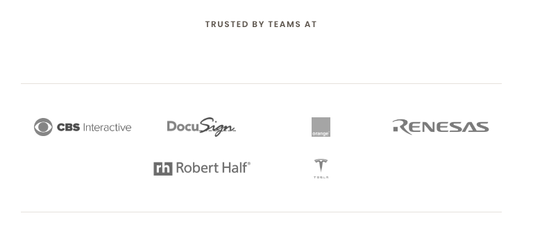
AE pixel count: 12,227 of 129,024 (9.48%). Red regions are horizontal-position shifts (uniform 140 px cells on live vs intrinsic widths on preview) and the secondary-row "Robert Half" position (live centers row 2, preview anchors Robert Half left and Tesla right via space-between — both are wrap = 4+2).
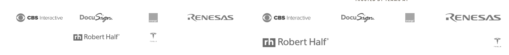
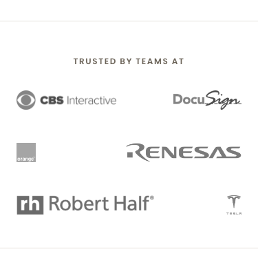
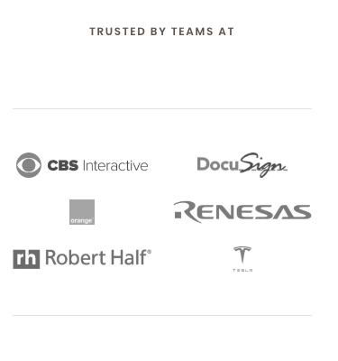
AE pixel count: 13,969 of 79,500 (17.57%). Higher percentage because (a) tighter viewport amplifies any horizontal shift, and (b) live's xs rule sets width: 100% on logos to fill 50%-cells, so each logo's content fills its row half — preview's logos use intrinsic widths so the right column logos (DocuSign 99 px, Renesas 168 px, Tesla 22 px) sit further right than live's filled cells. Wrap pattern (2+2+2) matches.
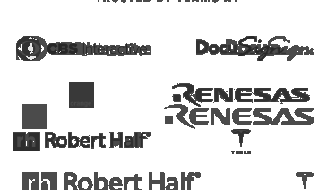
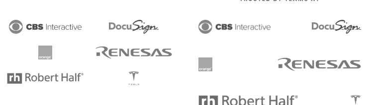
| Section | Viewport | Status | Description | Crop |
|---|---|---|---|---|
| Logo bar — wrap pattern | 1280 / 768 / 375 | MATCH | Live = preview at every viewport (6 / 4+2 / 2+2+2). | |
| Logo bar — treatment | 1280 / 768 / 375 | MATCH | filter grayscale(1), opacity 0.7, height 28px, object-fit: contain on every logo, every viewport. |
|
| Logo bar — per-logo horizontal position | 1280 / 768 / 375 | DELTA (accepted) | Live uses uniform 140 px cells; preview uses intrinsic widths. F's handoff §"Deviations from spec" #1 documents this as an infrastructure constraint of Drupal's Canvas sizes="auto" responsive-image template, which requires an explicit CSS width. |
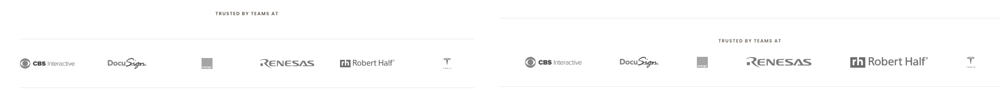 |
| Label-to-logos vertical gap | 768 | DELTA (out of scope) | Live ~140 px vs preview ~20 px. Belongs to section-spacing pass in cycle 8.6, not logo-bar parity. |
| Phase | Check | Viewport | Result | Evidence |
|---|---|---|---|---|
| 8.1 | No "Book a testing review" pill in header; logo + nav + (hamburger on mobile) only | 1280 | PASS | Header crop shows "performant labs" logo, 6 nav links, no pill, no CTA pill. Height ~73 px. |
| 8.1 | Hamburger button on mobile | 768 | PASS | Hero crop shows hamburger icon top right at 768. |
| 8.2 | Hero padding-inline: 0, no overflow at 768 | 768 | PASS | Hero crop shows hero text flush with viewport edges via padding-inline: 0, no horizontal scroll. |
| 8.5 | Hero min-height: auto, tight hero-to-next-band | 768 | PASS | Hero crop confirms hero ends cleanly below CTAs without excess vertical padding. |
| 8.4 | Feature cards 1-col stack of 3 at 768 | 768 | PASS | Features crop shows three cards stacked vertically: Tools / Tests that heal themselves / Experts alongside your team. |
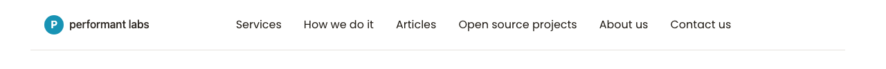
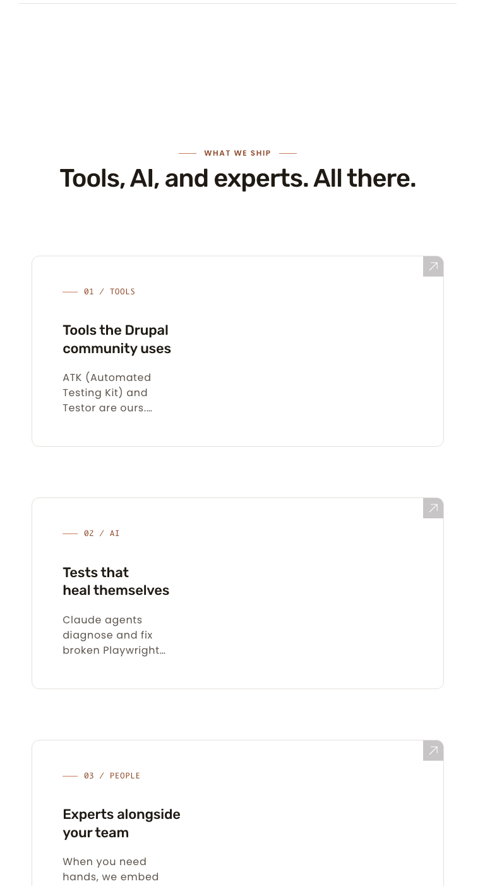
These are for context only. Whole-page diff numbers are dominated by section-spacing differences (live is ~1000 px taller per viewport) that are owned by sub-cycle 8.6, not 8.3.
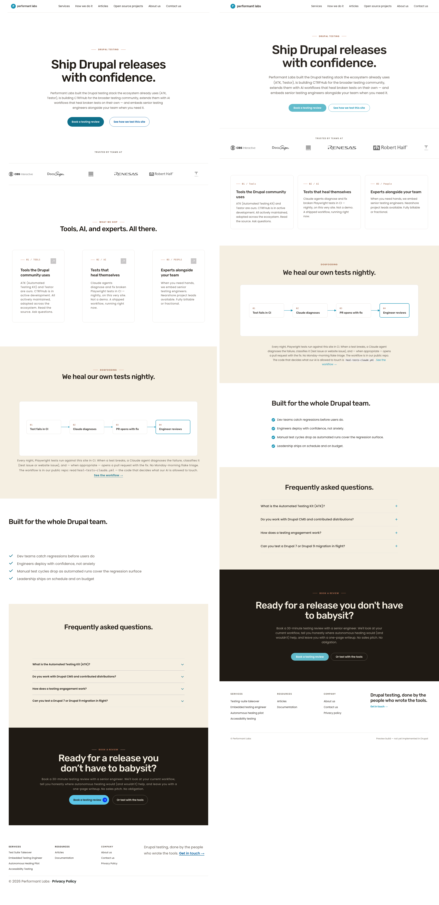
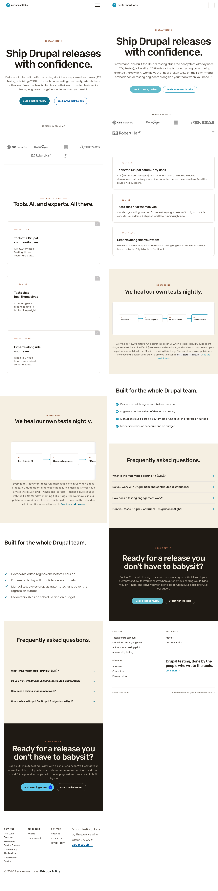
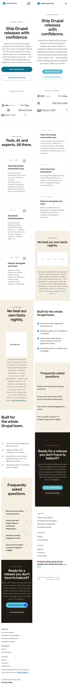
docs/pl2/Briefs/pl_design_brief.md §"Per-section mobile behavior" §"Logo bar" says "two rows of three at md" but the canonical preview produces 4+2 at 768. Update the brief to read "wraps naturally at md (currently 4+2 due to logo widths)" so future audits do not flag this as a divergence. Doc-only.config/sync/views.view.articles.yml is unstaged on this branch and unrelated to 8.3 (T flagged in §"Advisory notes").Generated by Spec Auditor 2026-05-11. Branch aa/pl-homepage-phase-8.3-logo-grid.